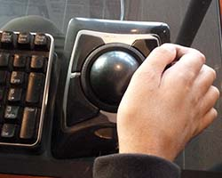

Symboles et types de handicap
Handicap visuel
Le handicap visuel désigne les limitations fonctionnelles liées à la vision, que ce soit une cécité
totale ou partielle.
Les personnes atteintes de handicap visuel peuvent utiliser des aides techniques telles que les plages
brailles, les
synthèses vocales, ou les dispositifs d'agrandissement de texte pour accéder à l'information.

Handicap auditif
Le handicap auditif concerne les limitations fonctionnelles liées à l'ouïe, que ce soit une surdité
totale ou partielle.
Les personnes atteintes de handicap auditif peuvent utiliser des appareils auditifs, des boucles
magnétiques ou des
sous-titres pour accéder à l'information sonore.

Handicap moteur
Le handicap moteur concerne les limitations physiques dans les mouvements et la coordination avec très souvent
l'incapacité à utiliser une souris, voire même l'utilisation de matériels spécifiques avec le besoin de bénéficier de
davantage de temps pour effectuer des manipulations.

Handicap cognitif
Le handicap cognitif concerne les problèmes de troubles de l'apprentissage, l'incapacité à se souvenir ou à se
concentrer sur de grandes quantités d'informations, difficultés de lecture et de compréhension, difficultés à prendre
des décisions.
Quelques matériels d'accessibilité
Canne pour personne aveugle

Plage braille

Synthèse vocale

Trackball (remplace la souris)